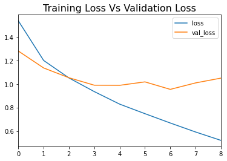
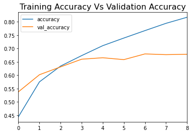

CNN Model Activity
Task
This entry uses the saved Unit 9 CNN notebook and records the workflow, results, and one changed prediction example.
Notebook Workflow
The notebook uses CIFAR-10, scales the images, converts labels to categorical format, and splits the data into training, validation, and test sets.
Model Architecture and Training
The model uses two convolutional layers, max pooling, a dense hidden layer, and a 10-class softmax output. The saved run used Adam, early stopping, and stopped after 9 epochs.
Saved Results
Saved outputs: training accuracy 0.8172, validation accuracy
0.6785, test accuracy 0.6703, test loss
1.0768, macro precision 0.68, and macro recall
0.67. Vehicle classes performed better than visually similar animal
classes.
Single-Image Prediction
With the image index changed to x_test[7], the model predicted
frog, matching the true label.
What the Notebook Showed
The notebook shows a complete CNN pipeline and class-level differences in performance.
Evidence


x_test[7] single-image prediction correctly classified as frogLearning Outcomes
Supports LO1 and LO2 through CNN dataset preparation, evaluation, and ethical reflection on image-recognition use.
Reflection on Wall (2019)
Wall (2019) shows that CNN-based facial recognition raises fairness, privacy, and accountability issues. Even a small number of false matches can cause real harm.
- Wall, M. (2019) ‘Biased and wrong? Facial recognition tech in the dock’, BBC News, 3 July. Available at: https://www.bbc.com/news/business-48842750 (Accessed: 20 April 2026).